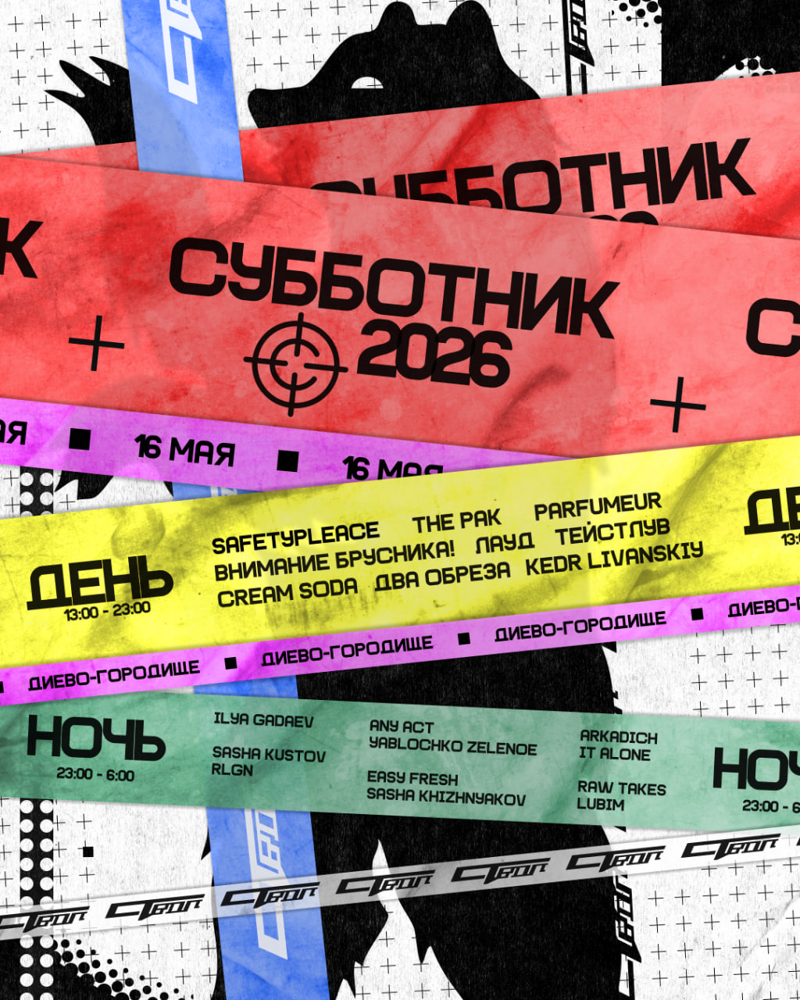

Главный электронный проект страны CREAM SODA и создатели лейбла СТВОЛ каждый год проводят музыкальный фестиваль. Для всех, кто внимательно следит за творчеством группы CREAM SODA, тема субботника вполне очевидна, ведь данное большое событие было впервые анонсировано на альбоме «Internet Friends». А уже в мае прошлого года стало добрым оригинальным мероприятием, собравшим более 2000 слушателей с близлежащих городов и столичных поклонников!
ПОДРОБНЕЕ